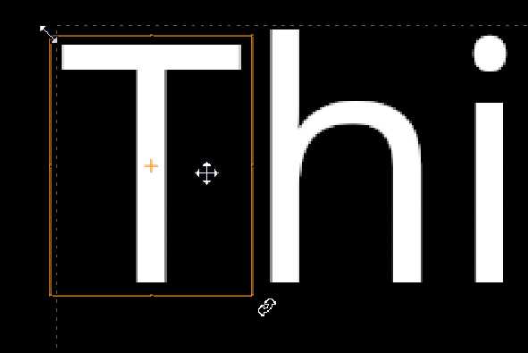

文本节点允许您在查看器中转换选择，或在 动画层 桌子和变换在一起。这两种方法都支持使用关键帧的动画。
查看器中的选择是手动转换的，也就是说，通过操作在您的选择上绘制的手柄。
| 1。 | 启用 变换 在查看器上方的控件中。 |
| 2. | 在查看器中选择所需的字符以启用变换手柄。 |
| 3. | 如果将光标悬停在选定内容上，光标将根据位置更改以显示控制柄的功能。 |

| 4. | 通过拖动所需的控制柄来平移、旋转和缩放选择。 |
如果要设置更改的动画，请参见 动画变换 欲了解更多信息。
提示: 默认情况下，缩放是围绕选择的中心均匀进行的。要相对于相反的角或边缩放，请按住 Ctrl / Cmd 拖动变换控制柄时。
的 集团 选项卡将组选择保存在 动画层 表允许您使用变换控件分别影响图层。
| 1。 | 打开属性并单击 集团 选项卡以显示变换控件和 动画层 桌子。 |
| 2. | 在查看器中选择所需的字符，或 消息 字段，然后单击 + 按钮创建动画层，或单击 创建组 在观众上方。 |
您可以根据需要创建任意多个动画层，每个动画层都根据您在查看器中的选择进行命名。
| 3. | 选择一个动画层和使用的变换控制 集团 标签来改变你的选择。 |

If you want to animate your changes, see Animating Transforms for more information.
| 4. | 单击 - 按钮删除动画层。 |
|
|